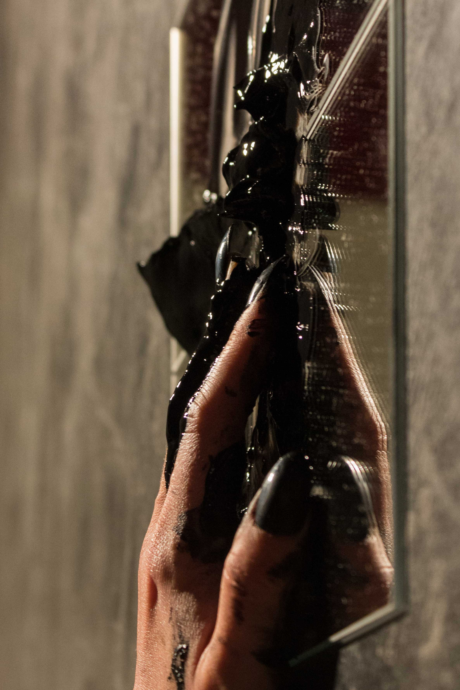
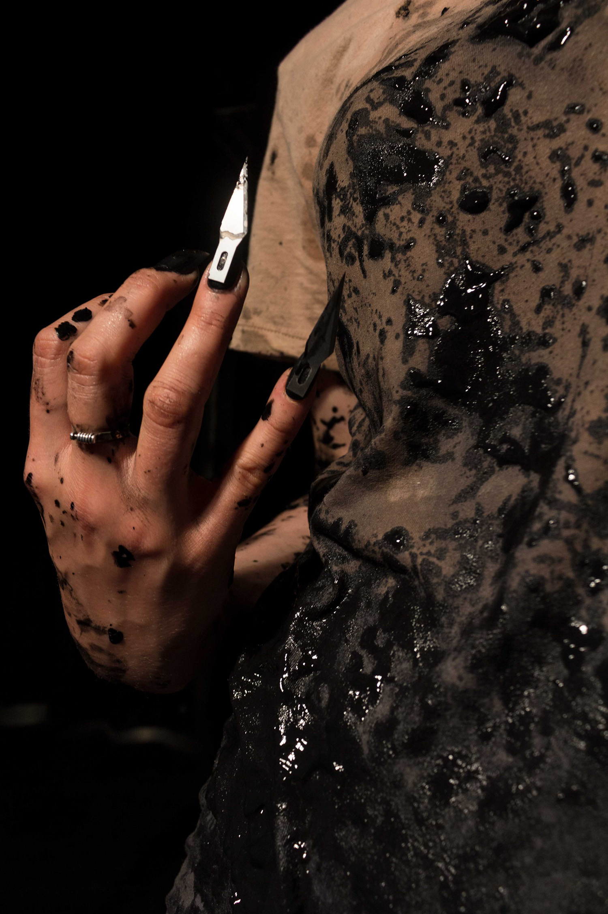
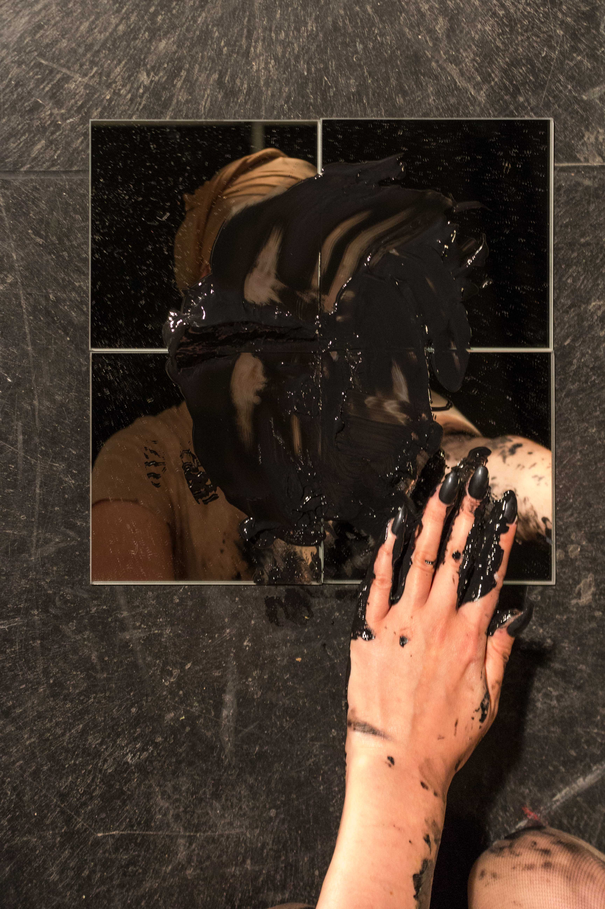
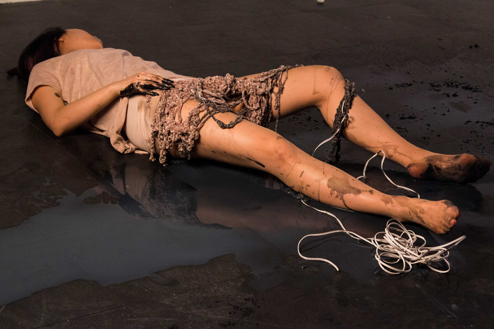
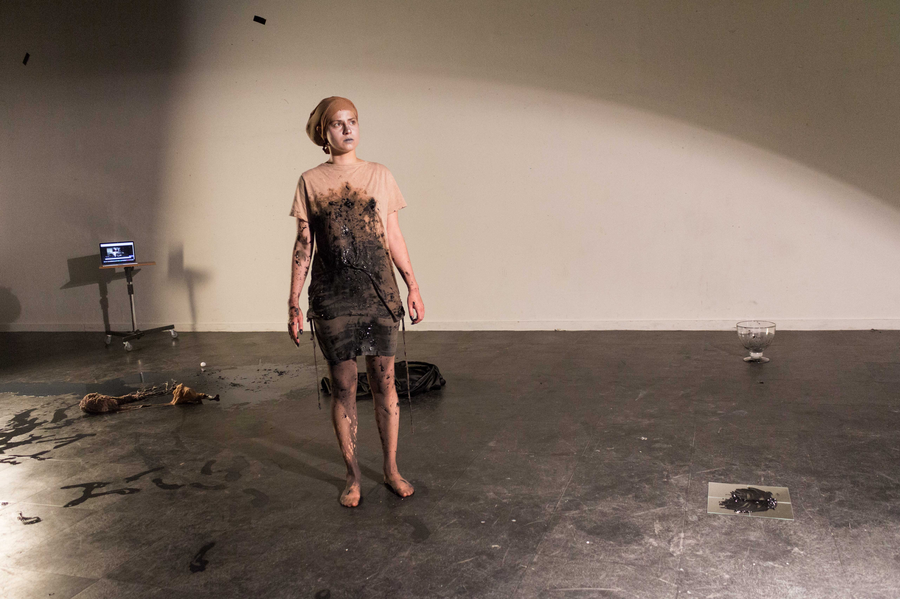
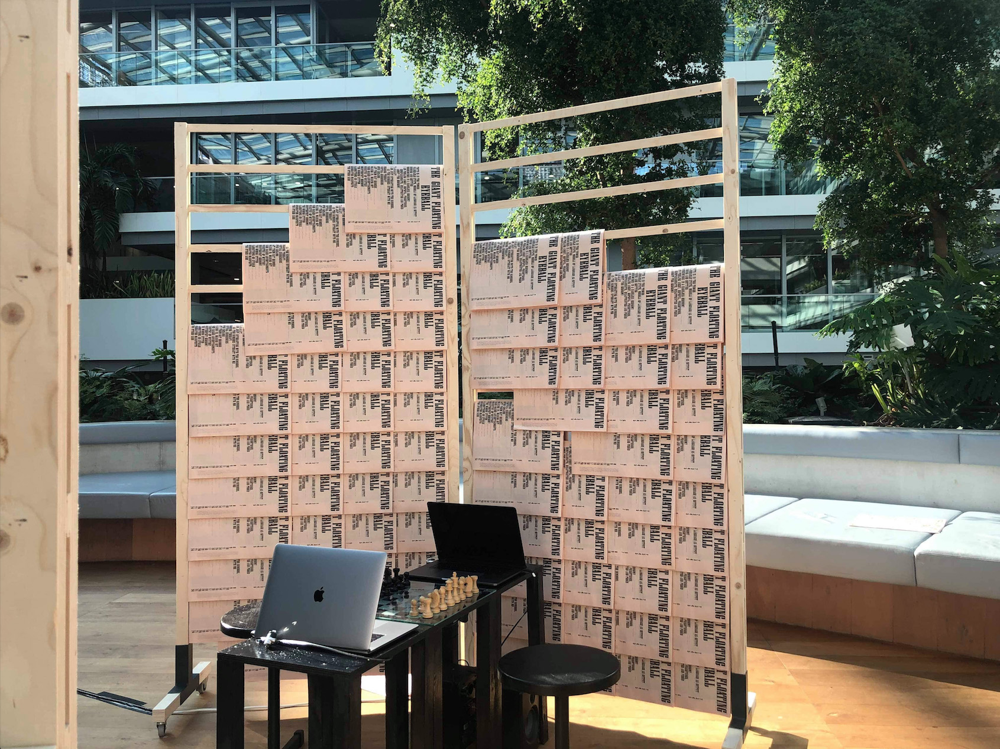
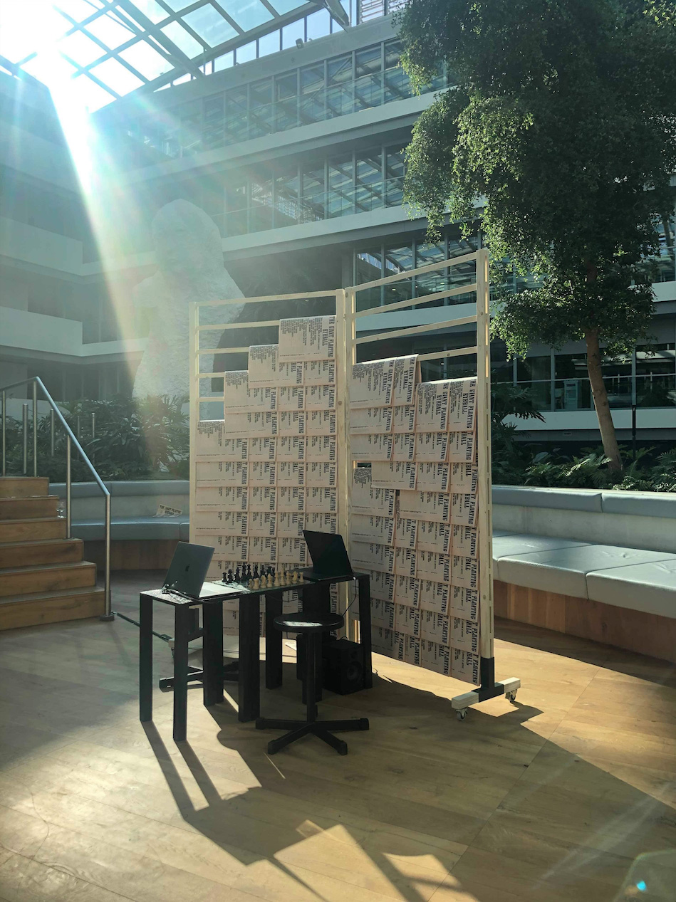
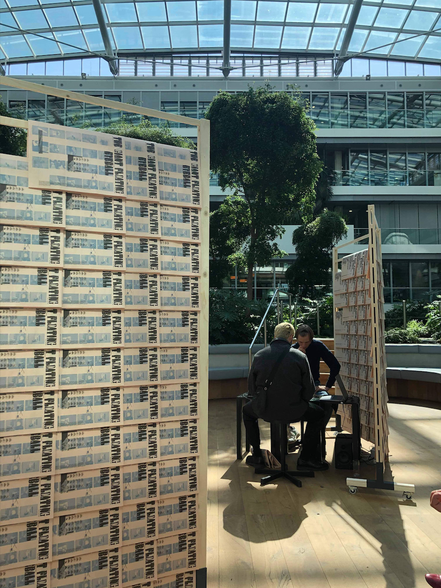
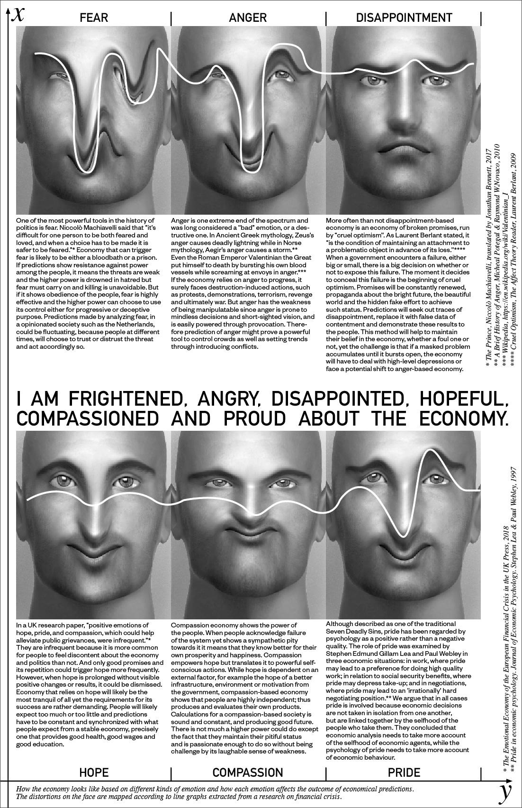
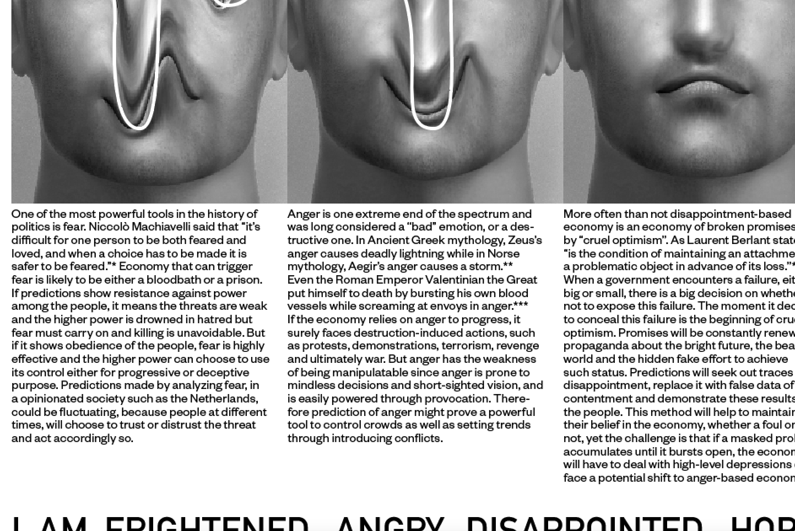

1. Still of the performance 'Beast Witout Hands', with Zuzanna Zgierska, 2018.
1.
2.
3.
4.
5.
6.
![6. “Soy sausage imitates the operationalised pig, referring only to a form and no longer to a specific content. For Berwanger, the historical entanglement of technicization is linked to our use of animals: ox and plow in agriculture, feather quill in writing, wool for textile products, etc. Nowadays however, animal bodies are becoming superfluous as a resource materials: “we removed ourselves from given and trusted circuit since we are no longer dependent on animal (within us).””—an extract from 'Beast Without Hands'.](img/performance_2018/PER_beastHands_3.jpg)
7.
8.
Beast Without Hands
“Next image: two human hands—an exemplary referenceto handicraft—are caught in an attempt to touch. Acting like magnets, they never reach each other. “Who or what is acting in a culture of constant mediation?,” wonder curators of transmediale, the yearly festival on media and technology. The video-logo of 2017 edition called ever elusive (nota bene designed in an iPhone screen format) refers to the destabilised centrality of the human in nowadays media culture. The main actor, who had mastered his tools during the past few centuries, created a stage of information systems and hybrid techno-ecologies, which in turn started to be an entity on its own. In other words, the elusive character of today’s media feeds and obscures new forms of agency—in which human no longer plays an active role. [transmediale] How does recent technology influence the dynamic between human and non-human, subject and object? What is the role of analog and digital craft in relation to human, understood as the dychotomy of body and mind? Is this division still valid?”—Beast Without Hands, Trang Ha & Zuzanna Zgierska, 2018
In collaboration with Zuzanna Zgierska. The project is divided into two parts: the text and the performance.
1. View of the installation 'I’m Frightened, Angry, Disappointed, Hopeful, Compassion And Proud About The Economy' ready for the opening, with Scene Peng, 2019.
1.
2.
3.
4.
5.
I’m Frightened, Angry, Disappointed, Hopeful, Compassion And Proud About The Economy
In recent years, the use of algorithms has been propagated for different purposes, one includes the prediction of financial crisis in a nation's economy. Often than not, these computations are related to digit-type/number databases, such as the number of population, the number of voters, the number of unemployments, the number of establishments, etc. but scarcely are the relationship between algorithms and feelings. This project is trying to find this correlation, in the form of an interactive performance of the game chess.
Chess is a game of both the computational-mind and the emotional-body. When a player plays, he stays as silent as a humming processor. When a player wins, he exerts a grin of triumph. Each move made is a tick of a feeling inside. Chess is a game of prediction, the moves are not stand-alone, they follow each other to reach higher position of winning. The more coherent are the moves, the more the chance of success. Chess is a race of two calculating armies and is therefore the metaphor for our society’s algorithmic tendencies. How does it feel like to hear the sound our own calculation while playing chess?
The final artwork is a chess board set up, with two laptops on the side connected with speakers, and two chairs for the players. The laptops’ webcams track the movement of the hands as they shuffle around, think, hesitate and decide. The movements are then translated through a previously trained A.I model, who interprets and outputs synthesized sounds to the speakers. Together the four players, both machine and human, compose a non-stop ambient piece that reflects the atmosphere of the game, be it "Frightening, Wrathful, Disappointing, Hopeful, Compassing Or Full of Pride”.
In collaboration with Scene Peng.
Part of the exhibition The Giant Floating Eyeball, with Matthias Kreutzer, Maarten Cornel and James Grave.